Hướng dẫn MailDev lite
Phiên bản một dự án, chạy độc lập trong mạng của khách hàng (air-gap): một container, SQLite, tài khoản nội bộ, chứng chỉ cấp sẵn. Dành cho người đóng gói tại nhà cung cấp, người cài đặt tại site khách và người dùng hằng ngày.
Cập nhật 2026-10-29
1. Bản lite là gì
Cùng một sản phẩm, đóng gói cho nơi không có hạ tầng tập trung.
Nhiều dự án chạy trong mạng cô lập của khách hàng: không truy cập được maildev.example.com, không có Active Directory, không xin được PostgreSQL hay OpenBao. MailDev lite là bản thu gọn của MailDev cho chính các site đó: ứng dụng của khách gửi mail (SMTP hoặc API kiểu SendGrid / SES / Azure / Graph / Gmail) vào MailDev lite, mail được bắt lại và giữ nội bộ, không bao giờ gửi ra ngoài trừ khi bật relay và owner duyệt từng mail.
Một container
Binary Go kèm giao diện web nhúng, HTTPS tự phục vụ. Không cần Node.js, không cần cơ sở dữ liệu ngoài.
SQLite
Toàn bộ dữ liệu trong thư mục data/. Sao lưu = chép thư mục.
Tài khoản nội bộ
Không có AD. Admin tạo tài khoản, người dùng phải đổi mật khẩu lần đầu.
Một dự án
Dự án default; mọi tài khoản tự động là member, admin là owner.
Chứng chỉ 10 năm
Cấp từ OpenBao PKI của công ty lúc đóng gói, hoặc tự ký nếu không có.
Giống bản đầy đủ
SMTP/IMAP/POP3, API các nhà cung cấp, Outlook, relay có duyệt, S/MIME, nhật ký, lưu trữ, giao diện vi/en/ja.
| Bản đầy đủ (maildev.example.com) | Bản lite | |
|---|---|---|
| Triển khai | Kubernetes, 2 image | 1 container, docker compose |
| CSDL | PostgreSQL ngoài | SQLite trong data/ |
| Đăng nhập | Active Directory + tài khoản khách | Chỉ tài khoản nội bộ |
| Dự án | Nhiều, admin tạo | Một dự án default |
| Vai trò | admin / auditor / user; owner / member | Giống hệt; tài khoản nội bộ được làm owner, admin, auditor |
| Mã hoá dữ liệu nghỉ | OpenBao Transit theo dự án | Không (khuyến nghị mã hoá ổ đĩa) |
| Chứng chỉ TLS | cert-manager (Let's Encrypt) | Cấp sẵn 10 năm từ OpenBao PKI, hoặc tự ký |
| Giao thức và tính năng | SMTP 25/587/465, IMAP 143/993, POP3 110/995, HTTPS 443, API, relay, S/MIME, audit | Giống hệt |
2. Kiến trúc và cổng
trình duyệt ──443──► 8443 HTTPS (web UI + REST API) ┐
Outlook ────143/993─► 1143/1993 IMAP / IMAPS │ container maildev-lite
Outlook ────110/995─► 1110/1995 POP3 / POP3S │ (user không đặc quyền)
ứng dụng ──25/587/465► 1025/1587/1465 SMTP / STARTTLS / SMTPS ┘
/data/maildev.db /data/master.key (volume ./data)
/certs/tls.crt tls.key smime-ca.pem (volume ./certs, chỉ đọc)- Container chạy bằng user không đặc quyền nên lắng nghe cổng > 1024;
docker-compose.ymlánh xạ cổng chuẩn của host vào. Giao diện hiển thị đúng cổng chuẩn cho người dùng. data/chứa CSDL SQLite và khoá chủmaster.key(mã hoá credential dự án và mật khẩu relay). Sao lưu thư mục này là đủ.- Không gọi ra Internet, không cập nhật tự động: phù hợp mạng cô lập.
| Dịch vụ | Cổng host | Cổng container | Ghi chú |
|---|---|---|---|
| Web UI, REST API, API SendGrid/SES/Azure/Graph/Gmail | 443 | 8443 | HTTPS. Cổng 8080 HTTP thường cũng mở cho reverse proxy/healthcheck. |
| SMTP | 25, 587, 465 | 1025, 1587, 1465 | Bắt buộc AUTH PLAIN/LOGIN bằng credential dự án. |
| IMAP | 143, 993 | 1143, 1993 | Một hộp INBOX. |
| POP3 | 110, 995 | 1110, 1995 | Xoá trên client = xoá khỏi dự án. |
3. Yêu cầu tại site khách hàng
- Máy chủ Linux x86-64 (Ubuntu 22.04+, RHEL 8+ hoặc tương đương), 2 CPU, 2 GB RAM, 20 GB đĩa.
- Docker Engine 24+ với plugin
docker compose(hoặc Podman 4+ với podman-compose). - Một tên miền nội bộ trỏ về máy chủ, ví dụ
maildev.customer.local(DNS nội bộ hoặc file hosts). Tên này phải trùng chứng chỉ. - Mở trong LAN: 443, 25/587/465, 143/993, 110/995. Không cần mở ra Internet.
retention_days (mặc định 14 ngày, tối đa 180) và vượt max_emails (mặc định 5000) nên dung lượng đĩa tăng chậm.4. Đóng gói (phía nhà cung cấp)
Làm trên máy có Internet và quyền truy cập OpenBao PKI (pki-int, role tls-any).
git clone https://github.com/phongbui83/maildev.git cd maildev-lite make sync # (tuỳ chọn) lấy code mới nhất của ../backend và ../frontend export BAO_ADDR=https://vault.example.com BAO_TOKEN=<token> make package HOST=maildev.customer.local IP=10.20.30.40 # -> dist/maildev-lite-<version>-maildev.customer.local.tar.gz
Bundle gồm image (docker save), docker-compose.yml, .env đã điền hostname, certs/ (chứng chỉ 10 năm + chuỗi CA, ca.crt để cài lên máy người dùng, smime-ca.pem để xác minh chữ ký S/MIME), install.sh và tài liệu.
- Chỉ build image:
make image. Chỉ cấp cert vàocerts/:make cert HOST=... IP=.... - Chạy thử tại chỗ không cần cert:
make web build && ./dist/maildev-literồi mở https://localhost:8443 (chứng chỉ tự ký, admin/admin). - Kiểm thử tự động:
make testchạy toàn bộ bộ test của bản đầy đủ trên binary lite cộng thêm kiểm tra riêng của lite.
5. Cài đặt tại khách hàng
- Chép bundle sang máy chủ (USB, SCP…) và giải nén:
tar xzf maildev-lite-<version>-<host>.tar.gz. - Kiểm tra
.env(hostname, tài khoản admin ban đầu nếu muốn đổi). - Chạy
./install.sh(tương đươngdocker load+docker compose up -d). - Kiểm tra:
docker compose ps,docker compose logs -f maildev(có dòng https listening, smtp listening),curl -k https://<host>/readyz→ready. - Cài
certs/ca.crtvào kho chứng chỉ tin cậy của máy người dùng (Windows: Trusted Root Certification Authorities) để trình duyệt và Outlook không cảnh báo.
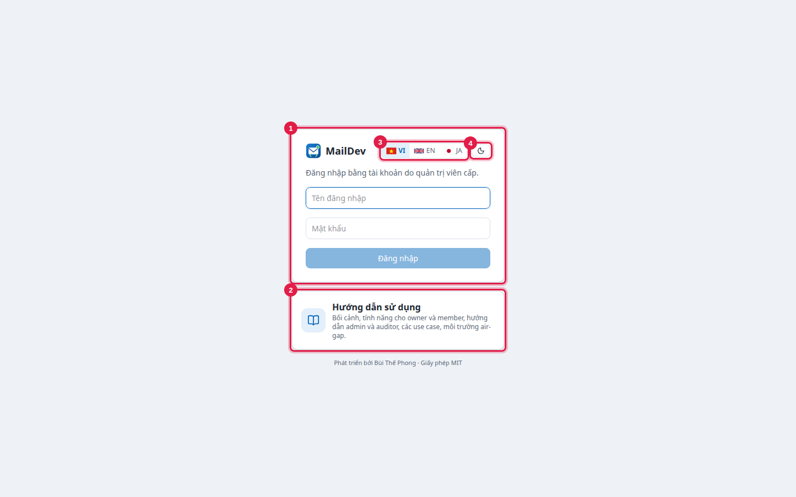
Đăng nhập lần đầu bằng admin / admin (hoặc giá trị MAILDEV_LITE_ADMIN_USER/PASSWORD trong .env). Hệ thống bắt buộc đổi mật khẩu ngay: tối thiểu 12 ký tự, có chữ hoa, chữ thường và số. Mọi tài khoản admin tạo sau này cũng phải đổi mật khẩu ở lần đăng nhập đầu.
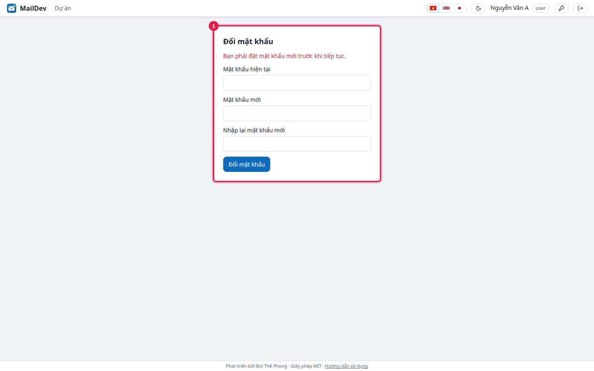
6. Cấu hình .env
| Biến | Mặc định | Ý nghĩa |
|---|---|---|
MAILDEV_HOSTNAME | maildev.local | Tên máy chủ người dùng kết nối; hiện ở Thông tin phát triển; dùng cho cert tự ký. |
MAILDEV_PUBLIC_URL | https://<hostname> | URL web, dùng trong hướng dẫn API. |
MAILDEV_LITE_ADMIN_USER / _PASSWORD | admin / admin | Tài khoản admin đầu tiên, chỉ tạo khi chưa có admin nào. |
MAILDEV_LITE_PROJECT_NAME | Default | Tên hiển thị của dự án duy nhất (slug cố định default). |
MAILDEV_MAX_MESSAGE_BYTES | 26214400 | Giới hạn kích thước mail (25 MB). |
MAILDEV_SESSION_TTL | 12h | Thời gian phiên web. |
MAILDEV_HTTP_ADDR | :8080 | HTTP thường cho reverse proxy / healthcheck; để trống để tắt. |
MAILDEV_HTTPS_ADDR | :8443 | HTTPS; để trống khi đã có reverse proxy TLS. |
MAILDEV_COOKIE_SECURE | true | Đặt false chỉ khi truy cập qua HTTP thường. |
MAILDEV_MASTER_KEY | tự sinh vào data/master.key | Khoá chủ (base64 32 byte) mã hoá credential và mật khẩu relay. |
MAILDEV_SMIME_CA_FILE | /certs/smime-ca.pem nếu có | CA tin cậy để xác minh chữ ký S/MIME. |
Mọi biến MAILDEV_* của bản đầy đủ đều được chấp nhận, ví dụ MAILDEV_AUTH_MODE=ldap cùng MAILDEV_LDAP_* nếu site có AD riêng.
7. Sử dụng hằng ngày
Trang chủ
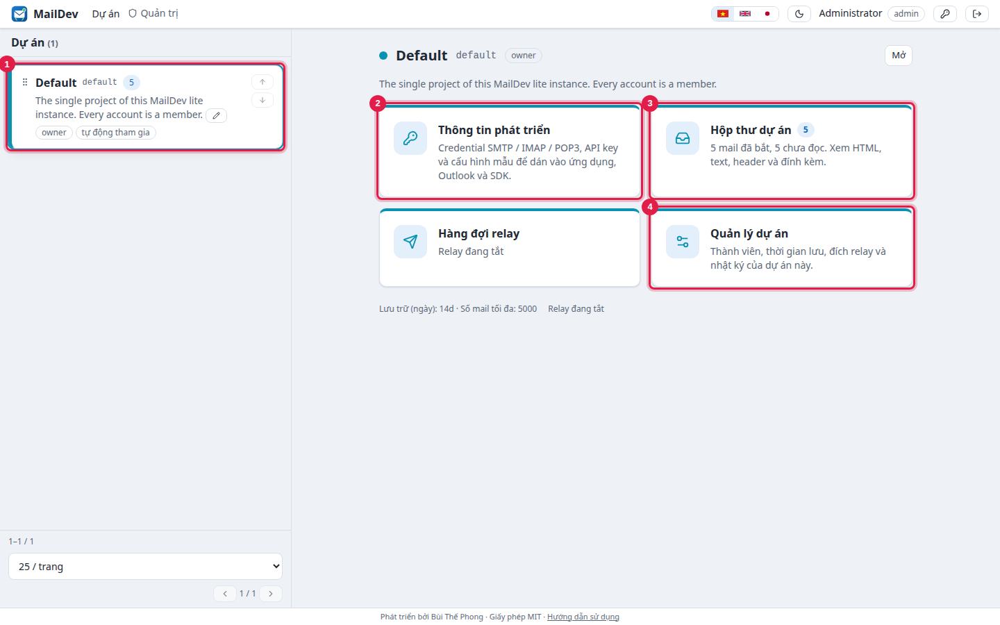
Thông tin phát triển: kết nối ứng dụng
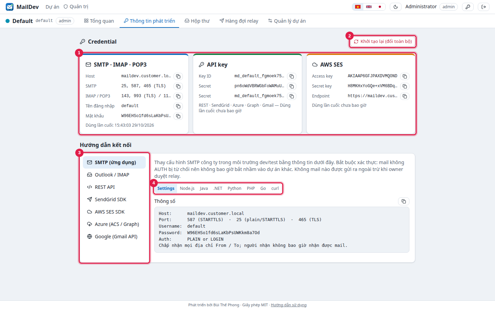
default), API key, khoá kiểu AWS SES · 2 Khởi tạo lại toàn bộ credential · 3 Chọn nhà cung cấp · 4 Chọn ngôn ngữ mã mẫuỨng dụng chỉ cần đổi host và credential, giữ nguyên SDK: SMTP (nodemailer, Spring, Laravel, Django, .NET, Go, Java), SendGrid (https://<host>/sendgrid), AWS SES v1/v2 (https://<host>/ses), Azure Communication Services (endpoint=https://<host>/azure/<key id>;accesskey=…), Microsoft Graph (https://<host>/graph/<key id>/v1.0), Gmail API (https://<host>/gmail/<key id>), REST chung POST /api/v1/send.
Host: maildev.customer.local Port: 587 (STARTTLS) hoặc 25 / 465 Username: default Password: <mật khẩu SMTP của dự án>
Outlook / Thunderbird
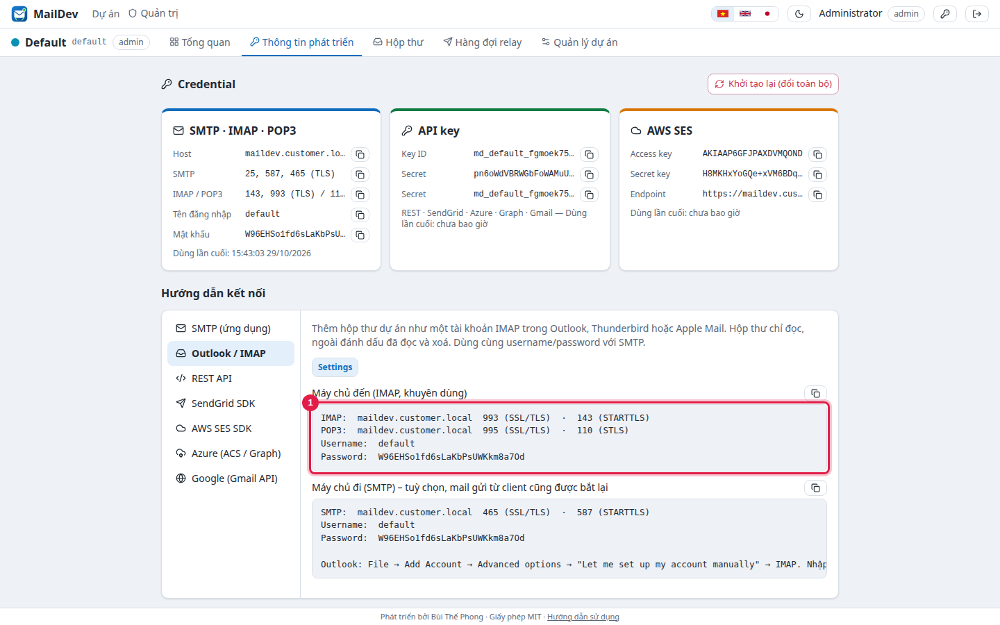
- Outlook: File → Add Account → Advanced options → “Let me set up my account manually” → IMAP.
- Email address: nhập nhãn bất kỳ, ví dụ
default@maildev.customer.local. - Incoming: <host>, 993, SSL/TLS. Outgoing: <host>, 465 SSL/TLS (hoặc 587 STARTTLS).
- Username/password: credential SMTP của dự án. Cần đã cài
ca.crtđể không bị cảnh báo chứng chỉ.
Hộp thư
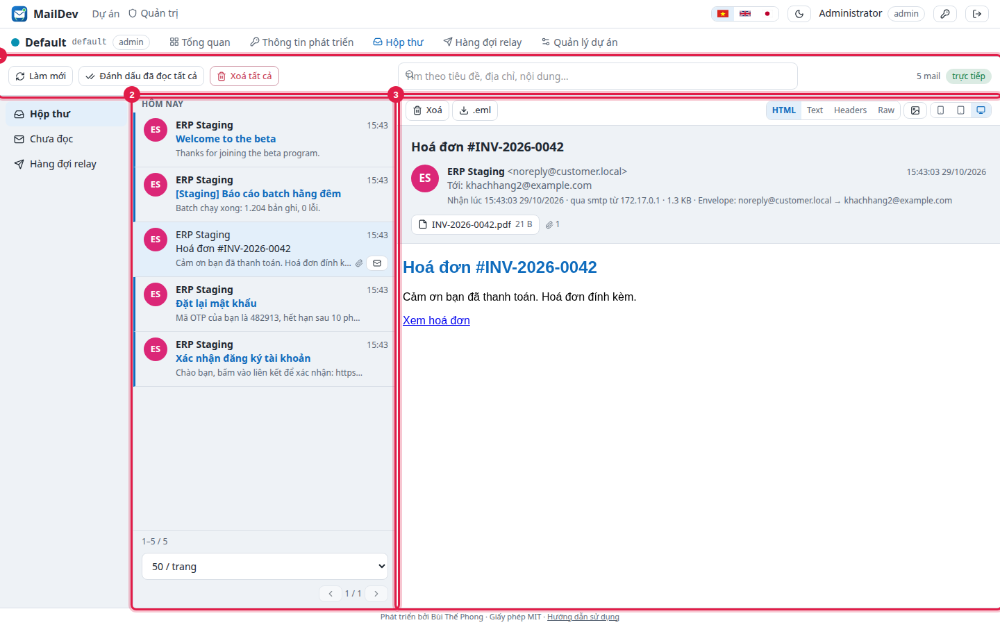
- Tìm theo tiêu đề, địa chỉ, nội dung. Phím ↑/↓ để chuyển thư.
- Ảnh từ xa bị chặn mặc định; bấm biểu tượng ảnh để tải khi cần.
- Thư mới hiện ngay (badge 'trực tiếp'). Thư có chữ ký S/MIME hiện trạng thái xác minh theo
smime-ca.pem. - Member xem, tìm, xoá, đánh dấu đã đọc; owner thêm quyền quản lý dự án.
8. Quản trị
Tài khoản
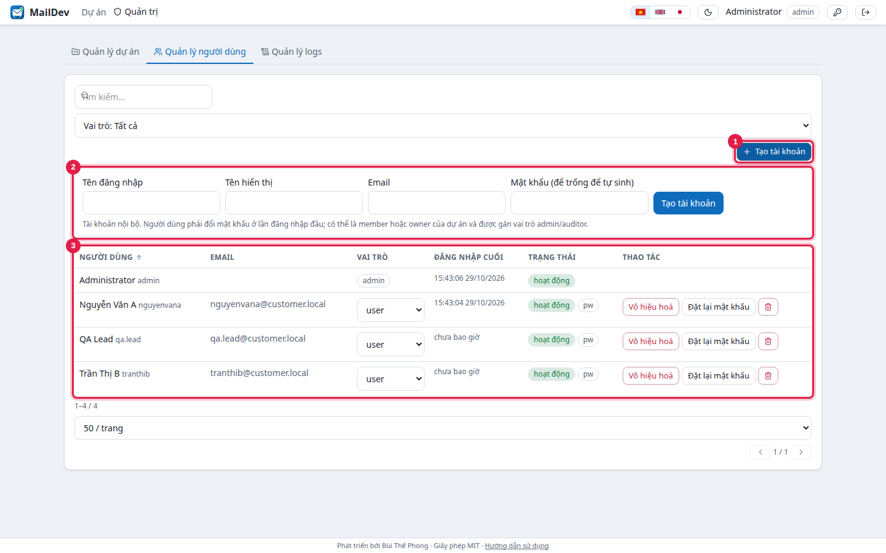
| Vai trò toàn cục | Quyền |
|---|---|
| admin | Tất cả: tạo tài khoản, đặt vai trò, cài đặt dự án, cấu hình relay, xem toàn bộ nhật ký. Tự động là owner của dự án. |
| auditor | Chỉ đọc: hộp thư, thành viên, nhật ký toàn hệ thống. Không sửa gì. |
| user | Mặc định. Tự động là member của dự án; owner có thể nâng lên owner. |
- Mọi tài khoản mới phải đổi mật khẩu ở lần đăng nhập đầu (badge
pwtrong danh sách). - Đặt lại mật khẩu sinh mật khẩu tạm hiện một lần. Vô hiệu hoá kết thúc mọi phiên. Mở khoá khi bị khoá vì sai mật khẩu.
- Quên mật khẩu admin: trên máy chủ chạy
docker compose run --rm maildev reset-admin admin, lệnh in mật khẩu tạm.
Thành viên và owner
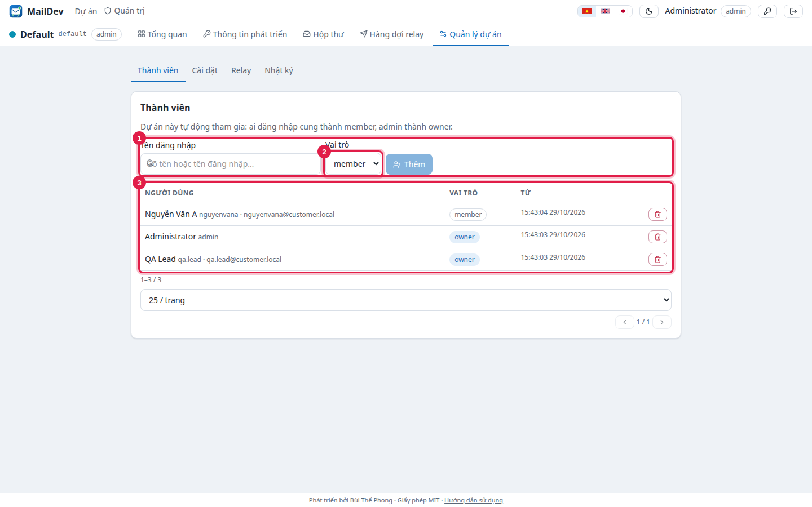
Owner (PM, QA lead) quản lý thành viên, khởi tạo lại credential, sửa mô tả, duyệt relay, xem nhật ký dự án. Một dự án có thể có nhiều owner.
Cài đặt dự án
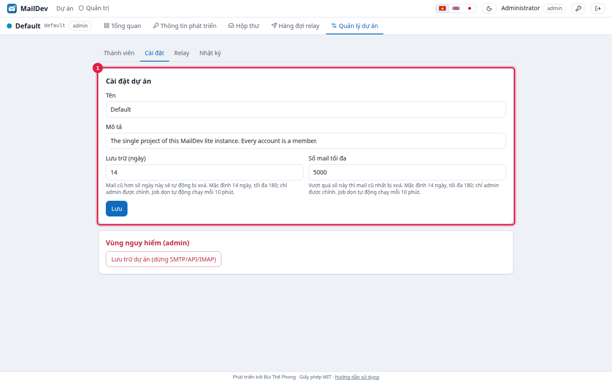
retention_cleanup.Relay (tuỳ chọn, mặc định tắt)
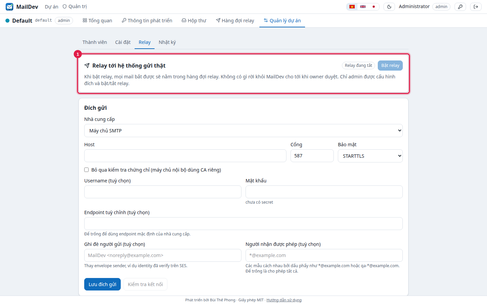
- Admin: Quản lý dự án → Relay → chọn loại đích, lưu, Kiểm tra kết nối, Bật relay.
- Owner: Hàng đợi relay → chọn một hoặc nhiều mail → Duyệt (gửi thật) hoặc Từ chối, kèm ghi chú.
- Người nhận ngoài allow-list bị chặn. Mọi quyết định ghi nhật ký (
relay_approve,relay_sent,relay_reject…).
Dự án và nhật ký
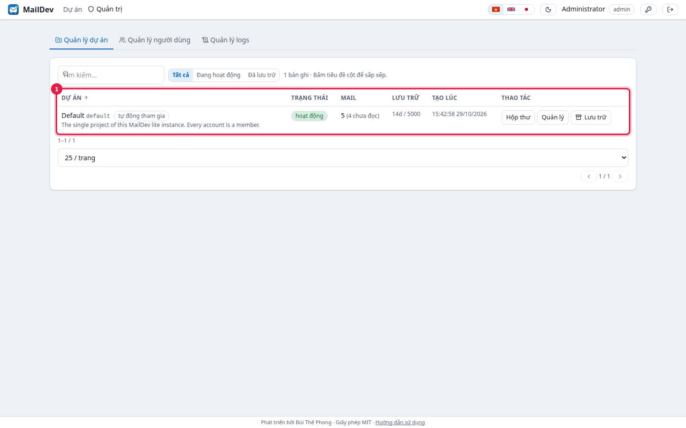
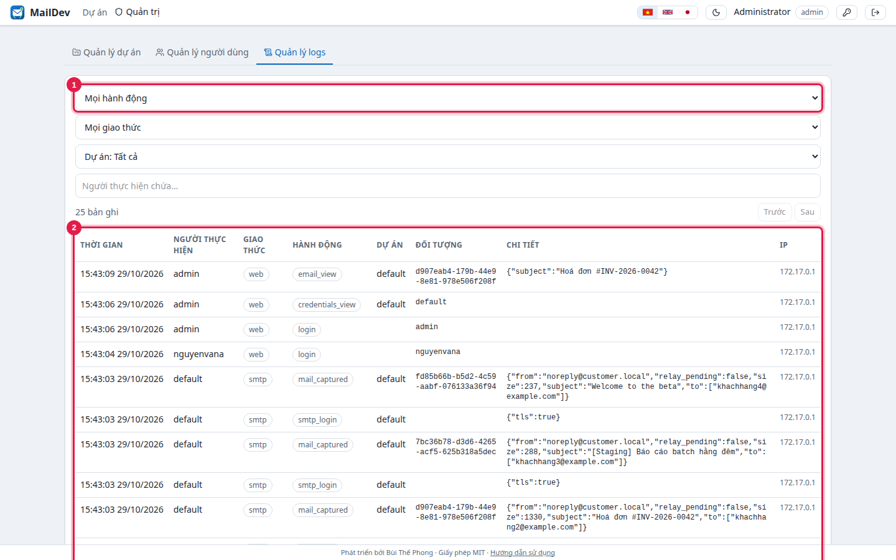
9. Sao lưu, khôi phục, nâng cấp
# sao lưu (dừng để file nhất quán) docker compose stop tar czf maildev-backup-$(date +%F).tgz data certs .env docker compose start # khôi phục trên máy mới: giải nén bundle, chép data/ và certs/ đè lên, ./install.sh # nâng cấp: nhận bundle mới từ nhà cung cấp docker load < maildev-lite-image-<new>.tar.gz sed -i 's/^MAILDEV_IMAGE=.*/MAILDEV_IMAGE=docker.example.com\/maildev\/lite:<new>/' .env docker compose up -d # schema SQLite tự nâng cấp khi khởi động
data/master.key phải đi cùng data/maildev.db. Mất khoá thì credential đã lưu không đọc được: phải Khởi tạo lại credential của dự án và cập nhật ứng dụng.- Chứng chỉ có hạn 10 năm; gia hạn bằng cách cấp cert mới tại nhà cung cấp (
make cert) và thaycerts/, rồidocker compose restart. - Không chạy hai container trên cùng thư mục
data/. - Khuyến nghị mã hoá ổ đĩa máy chủ vì mail nằm rõ trong SQLite.
10. Khắc phục sự cố
| Hiện tượng | Xử lý |
|---|---|
bind: address already in use | Cổng 25/143/443… bị dịch vụ khác giữ (Postfix, Dovecot, nginx). Dừng dịch vụ đó hoặc sửa ánh xạ cổng trong docker-compose.yml và MAILDEV_PUBLIC_*_PORTS. |
| Trình duyệt / Outlook báo chứng chỉ không tin cậy | Cài certs/ca.crt; kiểm tra hostname truy cập trùng với cert: openssl x509 -in certs/tls.crt -noout -subject -ext subjectAltName. |
| Quên mật khẩu admin / bị khoá | docker compose run --rm maildev reset-admin admin → mật khẩu tạm, bắt buộc đổi khi đăng nhập. |
| Đăng nhập xong lại về trang login | Truy cập qua HTTP thường mà MAILDEV_COOKIE_SECURE=true. Dùng HTTPS hoặc đặt false nếu có reverse proxy HTTP. |
Ứng dụng báo 530 Authentication required | Phải đăng nhập SMTP bằng username/mật khẩu của dự án (Thông tin phát triển). Địa chỉ người nhận không quan trọng. |
535 Authentication credentials invalid | Credential đã khởi tạo lại hoặc dự án đang lưu trữ. Lấy lại ở Thông tin phát triển. |
| Mail không thấy trong Outlook | Outlook phải cấu hình IMAP/POP3 (không phải Exchange); kiểm tra cổng 993/995 và credential SMTP của dự án. |
database is locked trong log | Đĩa chậm/đầy hoặc có tiến trình khác mở maildev.db. |
Log ứng dụng: docker compose logs --tail=200 maildev (JSON, mỗi mail bắt được là một dòng mail captured). Liên hệ, buithephong@gmail.com.